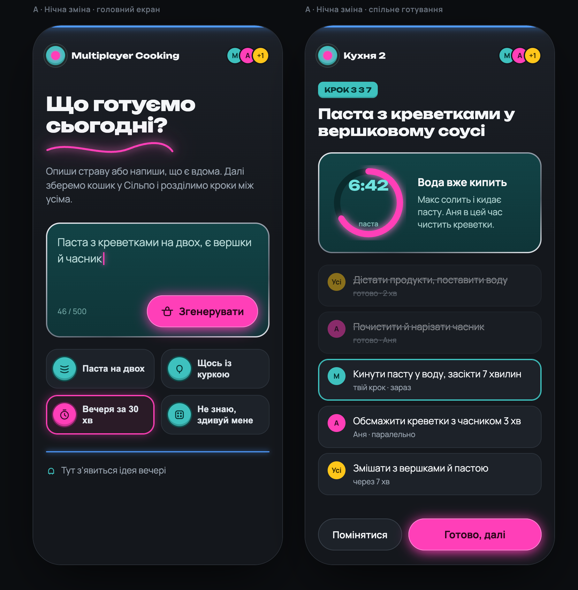
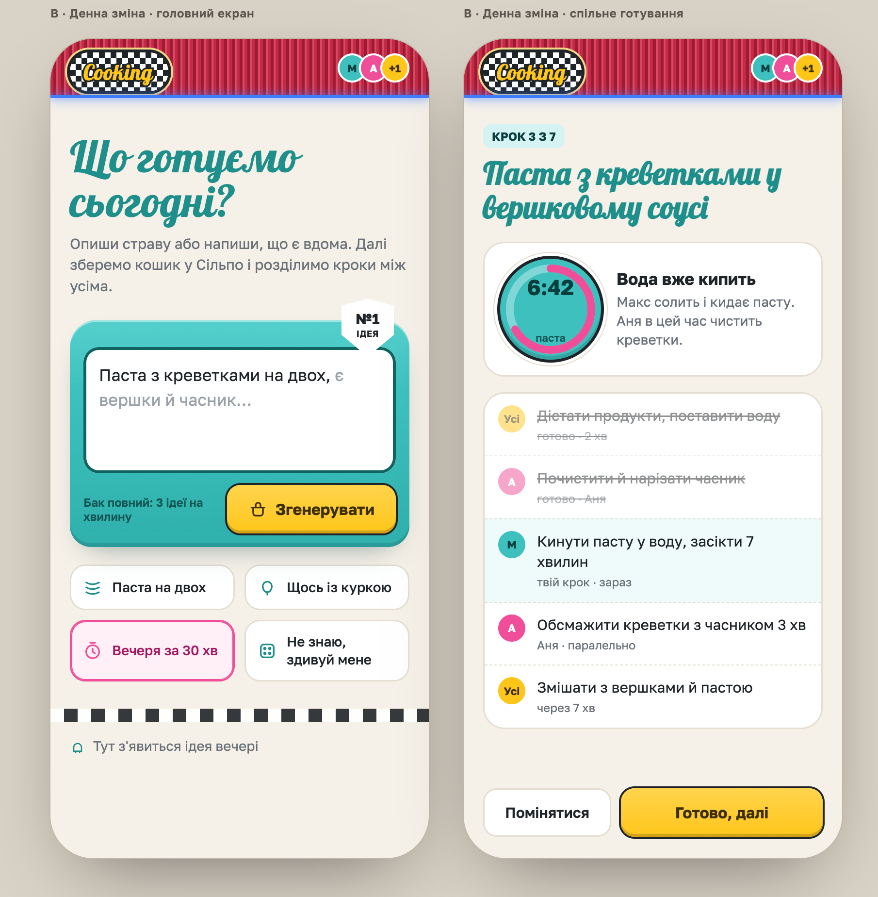
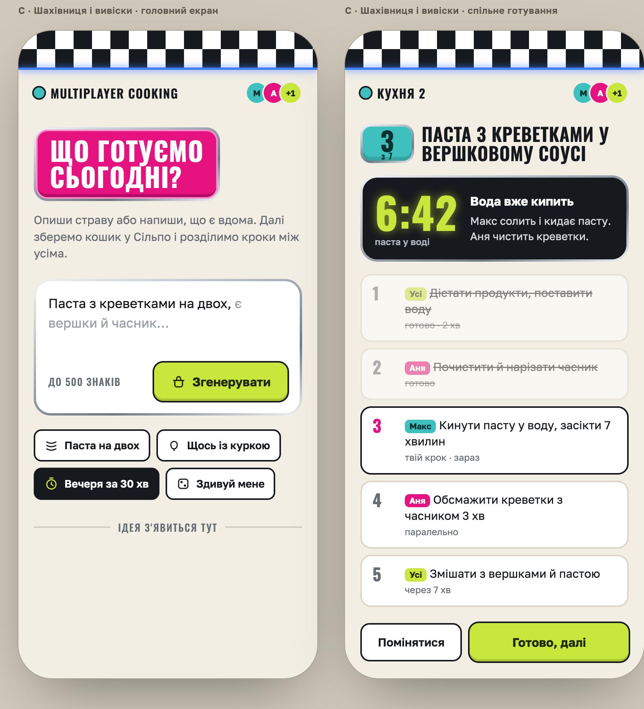
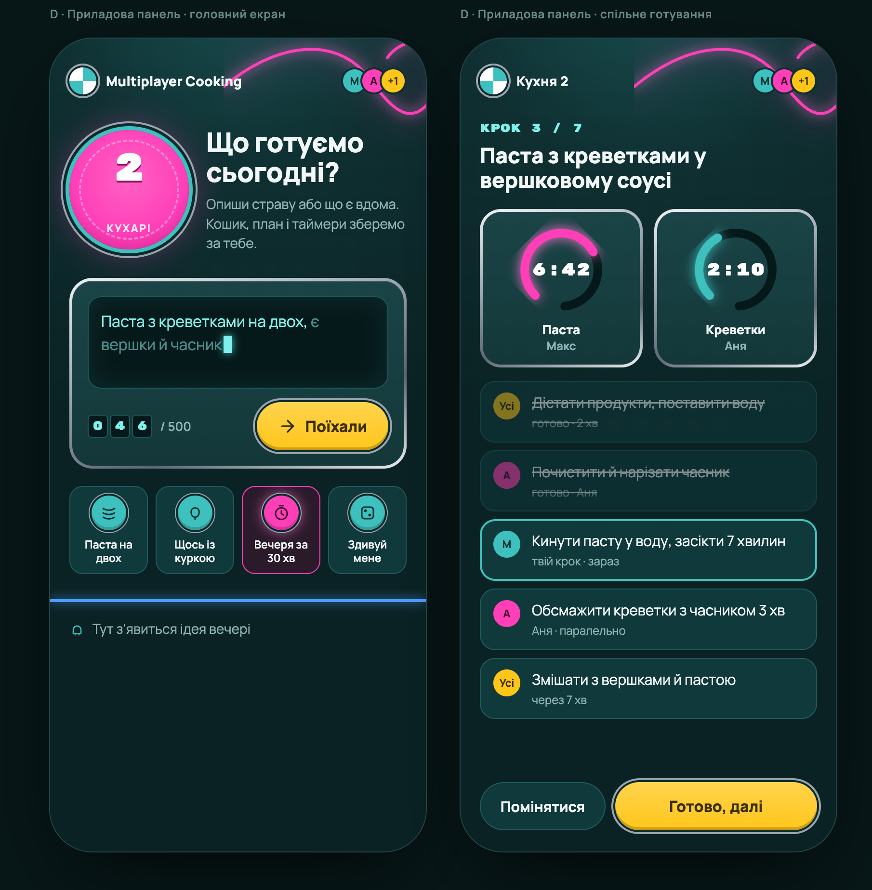

Чотири напрямки для Multiplayer Cooking
Усі беруть кольори з одеського Сільпо на Семафорному: бірюзові колонки, рожевий і синій неон, жовтий скрипт на шахівниці, хром, гофрований червоний фасад, лаймова «Гастрономія». Кожен напрямок ставить на одну головну річ і тримає решту спокійною. Скріншоти зроблено з HTML-макетів у цій папці, їх можна відкрити й покрутити.
#3EC1BE#FF3FB8#4F9BFF#FFC61A#C8E63C#B5223Bgradient#14171C#F6F1E8Стеля магазину: графіт, синя неонова смуга зверху, рожева трубка під заголовком замість підкреслення. Композер у хромованій рамці з бірюзовим склом. Швидкі запити як номери колонок. Найближче до фото, яке ти надіслав.

Кремовий фон, гофрований червоний фасад із синьою неонкою зверху, логотип-табличка «Cooking» жовтим скриптом на шахівниці як вивіска Сільпо. Композер це сама колонка: бірюзовий корпус, біле віконце, жовта кнопка-пістолет. Лише одна смуга шахівниці внизу.

C · Шахівниця і вивіски ✓ обрано, застосовано в апці
Шахівниця як шапка екрана, заголовок у рожевій табличці з хромованою рамкою як «Овочі та фрукти», лаймова кнопка як стіна «Гастрономії». Таймер у чорному боксі з лаймовими цифрами. Найграфічніший і найгучніший варіант.

Реальна апка після застосування: телефон, десктоп. Правила і токени описано в DESIGN.md.
{kind=link}
{kind=link}
Бірюзово-графітова панель авто. Круглий рожевий диск колонки як індикатор стану, одометр замість лічильника знаків, таймери як стрілочні прилади. Кнопки жовті з хромованим кільцем. Рожева трубка петлею у кутку як на стелі.
